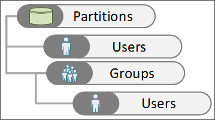
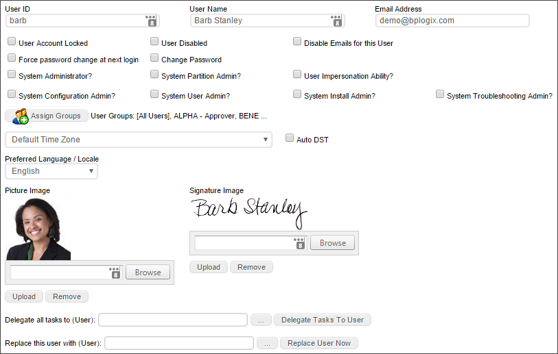

|
|
Lesson Contents | In this Lesson, you will learn the basic processes involved with administering Process Director users. |
Users must access Process Director with a User ID and password. A User ID must exist in the Process Director database before a login can occur. Process Director supports four types of user authentication methods.
The default authentication method uses Process Director to authenticate users. These users must be added to the Process Director database using the User Administration functions.
This authentication mechanism uses your Microsoft Windows Domain to authenticate users. These users will be automatically added to the Process Director database after being successfully authenticated by your Windows Domain Server.
This authentication mechanism uses your LDAP server (e.g. Active Directory) to authenticate users. These users will be automatically added to the Process Director database after being successfully authenticated.
External users are those that are authenticated by a third party system, such as CA CleverPath Portal, CA Siteminder, Cafesoft Cams, and other external authentication systems using Process Director APIs. External users are automatically kept synchronized with the third party authentication system on every login.
Authentication is not required for users that are authenticated by Windows, your LDAP server or an external authentication system. For built-in users, a User ID and password must be added to the Process Director database before a login can occur.
Process Director organizes users in the database as follows:

Users or groups can be members of partitions. Users can also belong to multiple groups, allowing for role based administration.
This section describes how to add users to Process Director using the built-in authentication. This procedure is not required for users that are authenticated by Windows, your LDAP server or an external authentication system. For built-in users, a User ID and password must be added to the Process Director database before a login can occur. When a user is configured in the Process Director database, additional information such as the user’s email address and alias can be configured.
Within the Users section of the System Administration area, click on the Create User link. This will prompt you to enter a User ID for the new user. Please Note: This will create a built-in user, not a Windows user.

When you click the Create User link, the Create User screen will appear and prompt you to enter a User ID and a Password for the new user. Passwords require at least one letter and at least one number.

Enter the user’s User ID and Password. You can also force the user to change the initial password upon login by clicking the Force password change at first login? check box. Using this setting enables you to create a temporary password that the user will replace with a password of choice the first time that he or she logs in.
Click the OK button to create the user account. When you do so, the Create User screen will close, and the Edit User screen for the new user will open.
The User ID will also serve as the user’s login user name for Process Director. BP Logix highly recommends that administrators ensure that User ID’s are unique to each user. This may not be possible, however, when using SAML authentication for existing users where duplicate user names exist. In this case the SAML authentication must send a unique GUID or identifier for the users. There is a variable in the custom vars file called fAuthSAMLAllowDuplicateUserIDs that must be set to “true” to allow this behavior.
 In many cases, Process Director will return a comma-separated list of users. Since the users are identified by UserName, we strongly recommend that your users names do not include commas as part of the user name.
In many cases, Process Director will return a comma-separated list of users. Since the users are identified by UserName, we strongly recommend that your users names do not include commas as part of the user name.

 To set an existing user’s account properties, click on the Edit hotlink in the user's row of the user list. The Edit User configuration will display, with the User ID and Password fields already configured. you may configure the remaining user properties.
To set an existing user’s account properties, click on the Edit hotlink in the user's row of the user list. The Edit User configuration will display, with the User ID and Password fields already configured. you may configure the remaining user properties.
Enter an email address that will be associated with the user in the Email Address field. You can change the password by checking the Change Password box; an input field will appear prompting for a new password. Click OK to save the configuration.
Additional check boxes enable you to configure the following settings:
| SETTING |
DESCRIPTION |
|---|---|
| User Disabled | Disables the user account, preventing the user from participating in any tasks, and deleting the user's participation from any existing tasks. |
| Disable Emails for this User | Prevents Process Director emails from being sent to the user. |
| User Account Locked | Locks the account, preventing the user from logging in. |
| Force password change at next login | Force the user to change their password on the next login attempt. |
| Change Password | When checked, a text box will appear that enables you to enter a new password for the user. |
This page allows you to grant the user different types of administrative privileges. You can grant users the following privileges by checking off the corresponding checkboxes:
| ADMIN TYPE |
DESCRIPTION |
|---|---|
| System Administrator | The top-level Administrative user, with complete control of the Process Director Installation |
| System Configuration Admin | A subset of the System Administrator user with access only to the Configuration tab. |
| System User Admin | A subset of the System Administrator user, with access only to the User Administration tab. |
| System Install Admin | A subset of the System Administrator user, with access only to the Installation Settings tab. |
| System Troubleshooting Admin | A subset of the System Administrator user, with access only to the Troubleshooting tab. |
| User Impersonation Ability | The ability for this user to impersonate other users. |
You can assign the user to Process Director user groups by clicking the Assign Groups button. When you click the button, the Group Selector will open.

From the list box on the left, select the user group(s) to which you'd like to assign the user, then click the  button, which will move the group names over to the list box on the left.
button, which will move the group names over to the list box on the left.
To remove the user from a group, select the group from the list box on the left, then click the  button to remove the group.
button to remove the group.
This dropdown control enables you to select the user's Time Zone. You can also allow Process Director to set the time zone to Daylight savings time automatically, by checking the Auto DST check box.
You can set the appropriate language for the user, or select the default system language, by choosing it from this dropdown. The use of languages other than English will require that Process Director be localized for each additional language.
A picture of each user can be uploaded to Process Director. The image will appear in the user information box for each user.

You may upload the image by clicking on the Browse button to find and select the image. Once the image is selected, clicking the Upload button will upload the signature image to Process Director. Acceptable image formats include GIF, JPG, and PNG images.
Process Director can imprint an electronic signature in all routing slips for a user. If you have an image of the user's signature, you may upload the image by clicking on the Browse button to find and select the image. Once the image is selected, clicking the Upload button will upload the signature image to Process Director. Acceptable image formats include GIF, JPG, and PNG images.
This user picker enables you to delegate another user to perform this user's tasks. Simply chose the user to whom tasks should be delegated from the User Picker, then click the Delegate Tasks to User button to begin delegation.
This user picker enables you to replace the current user with a selected user. This is not a delegation. Instead, the current user will be completely replaced by the selected user in all assigned tasks, e;g;, any task where the replaced user is specifically identified as the task assignee.
This replacement function will not replace the original user in any historical data, however, so an original user user who was the timeline/workflow initiator will still be listed as the initiator. Similarly, if the original user is assigned a task via a user picker on a Form field, or from a Business Rule, the Replace user function will NOT replace the original user in those objects, either. For these reasons, we recommend that you immediately disable the account for the original user. When you do so, this will likely result in future tasks with assignments made via Form or Business Rule going into an error state when the original user is assigned if the Form or Business Rule is not also edited when the original user is replaced.
The Replace User function is not a panacea for user replacement. All it can do is try to make replacing a user easier than it would otherwise be.
For User of Process Director v3.78 and higher, additional properties can be set for users. The Additional Properties section contains a number of text boxes to set these properties.

| PROPERTY |
DESCRIPTION |
|---|---|
| Title | A text box for the user's Title. |
| Description | A text box for a Description. |
| Phone | A text box for the user's phone number. |
| Manager | A UserPicker to choose the user's Manager. |
| Company | A text box for the user's Company. |
| Office | A text box for the user's Office name. |
| Department | A text box for the user's Department. |
| Business Unit | A text box for the user's Business Unit. |
| Legal Entity | A text box for the user's Business Entity. |
| Country | A text box for the user's Country. |
| Location | A text box for the user's Location. |
| Custom String | A text box for a custom string value. |
| Custom String 2 | A text box for a custom string value. |
| Custom Number | A text box for a custom numeric value. |
| Custom Date | A DatePicker for a custom date value. |
In general, the best practice for deleting users is...don't. Deleting a user will delete any historical information associated with that user, and you'll lose every record of anything the user has ever done. If a built-in process Director user is no longer valid, you should open the user account and check the User Disabled checkbox. For users thast are synched via Active Directory or other service, users that are removed from the synched profile will be automatically disabled in the system.